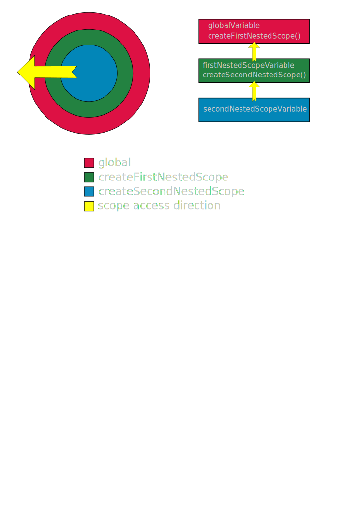

Script level
"use strict";
console.log("Using strict mode.");Function level
// non strict mode
function foo() {
"use strict"; // strict mode
console.log("Strict only inside function foo.");
}
// non strict mode
foo();"use strict";
var carToRate = "VolksWagen"; // variable in global scope
// prints "Rating car model: VolksWagen"
console.log("Rating car model: " + carToRate);
function rateFirstCar() {
var firstCar = "Fiat"; // variable in local scope
console.log(carToRate + " is better than " + firstCar);
}
function rateSecondCar() {
console.log("Mercedes is better than " + carToRate);
}
rateFirstCar(); // prints "VolksWagen is better than Fiat."
rateSecondCar(); // prints "Mercedes is better than VolksWagen."
console.log(firstCar); // ReferenceError, firstCar is not in scope"use strict";
var globalVariable = "I'm global!";
console.log(window.globalVariable); // prints "I'm global!"In ES5 scopes can only be created by creating a function, there is no block scope like in some other languages.
"use strict";
var isInputValid = true; // global scope
if (isInputValid) { // if block start
// global scope, blocks don't create new scope
var msg = "User input is valid.";
} // if block end
console.log(msg); // prints "User input is valid."Code from previous slide is equivalent to:
"use strict";
var isInputValid = true; // global scope
var msg;
if (isInputValid) {
msg = "User input is valid.";
}
console.log(msg); // prints "User input is valid."C# code:
var isInputValid = true;
if (isInputValid)
{
// Scope local to if statement
var msg = "User input is valid.";
}
Console.WriteLine(msg);Won't compile due to reference error since string msg is in the block scope of if statement.
Functions create a new scope, so isValid is not accessible from anywhere else, except inside the validateUsername function.
"use strict";
var userName = "admin";
function validateUsername(name) { // beginning of function definition
// create variable in function scope, inaccessible from global scope
// notice that name is also local to function scope
var isValid = name === "admin";
return isValid;
} // end of function definition
var userNameValid = validateUsername(userName);
console.log(userNameValid); // prints true
console.log(isValid); // ReferenceErrorScopes can be nested, actually previous example is also nesting scopes, i.e. the scope created by the function is nested inside the global scope.
Multiple levels of scope nesting are allowed by nesting a function inside a function.
If a function or a variable can't be found on the current scope, javascript will look for it in parent scope, then in parent's parent scope etc.
"use strict";
var globalVariable = "I'm in global scope!";
console.log(globalVariable); // prints "I'm in global scope!"
function createFirstNestedScope() {
var firstNestedScopeVariable = "First nested scope!";
console.log(firstNestedScopeVariable);
function createSecondNestedScope() {
// globalVariable and firstNestedScopeVariable
// also accessible here
var secondNestedScopeVariable =
"Nested in first nested scope";
console.log(secondNestedScopeVariable);
}
createSecondNestedScope();
}
createFirstNestedScope();
Having a variable with the same identifier inside a scope and its nested scope, when accessing a variable from the nested scope the variable in that scope will be used instead of the parent scope's variable, we say that the variable is shadowed.
"use strict";
var foo = 5;
function printFoo() {
// this foo is shadowing foo variable from global scope
var foo = 10;
console.log(foo); // prints 10
}
printFoo();
console.log(foo); // prints 5Variable and function declarations are moved to the beginning of their scope.
"use strict";
console.log(nonExistingVariable); // ReferenceErrorvs
"use strict";
console.log(definedLater); // prints "undefined"
var definedLater = "I exist!";
console.log(definedLater); // prints "I exist!""use strict";
console.log(bar); // prints undefined, but no ReferenceError
printFoos();
function printFoos() {
foo = "First foo!";
console.log(foo); // prints "First foo!"
var foo = "Second foo!"
console.log(foo); // prints "Second foo!"
}
var bar = "Bar!";
console.log(bar); // prints "Bar!""use strict";
var bar;
function printFoos() {
var foo;
foo = "First foo!";
console.log(foo); // prints "First foo!"
foo = "Second foo!"
console.log(foo); // prints "Second foo!"
}
console.log(bar); // prints undefined, but no ReferenceError
printFoos();
bar = "Bar!";
console.log(bar); // prints "Bar!"Declared using the function keyword, but the declaration can't start with the function keyword. To turn a function declaration into a function expression just wrap it in parantheses.
Name of the function can be given optionally, but the function expression is accessible only from from its own scope (not available from global scope).
"use strict";
(function myFunctionExpression() {
console.log("myFunctionExpression executed.")
});
myFunctionExpression(); // ReferenceErrorThe function expression in last example was a bit useless since we couldn't do anything with it, let's fix that.
"use strict";
var funcExpression = (function () {
console.log("funcExpression executed.");
});
funcExpression(); // prints "funcExpression executed."When assigned to variables, expressions are hoisted using previously mentioned variable hoisting rules.
"use strict";
console.log(funcExpression); // prints undefined
var funcExpression = (function () {
console.log("funcExpression executed.");
});
console.log(funcExpression); // prints function body
funcExpression(); // prints "funcExpression executed."So, what exactly is happening here? Take a look at the following example:
"use strict";
// evaluate expression (1 + 2) and assign the result to foo
// in this case the result is the number 3
var foo = 1 + 2;
1 + 2 // evaluate to 3 but result isn't stored anywhere
(1 + 2) // same as above, parentheses optional in this case
// evaluate func expression and assign the result to fooFunc
// in this case the result is a function
var fooFunc = function (a, b) { return a + b; };
// evaluate to function but result isn't stored anywhere
(function sum(a, b) { return a + b });Function expressions which are executed as soon as they are declared, pronounced as iffy.
"use strict";
// prints "iife executed." without the need for a separate call
(function iife() {
console.log("iife executed.");
})();Used to keep implementation details private and prevent global scope pollution.
"use strict";
var Module = (function createModule() {
function innerDoSomething() {
console.log("Inner do something.");
}
return {
doSomething: function() {
innerDoSomething();
console.log("Do something else.");
}
};
})();
Module.doSomething();In JavaScript functions have same "privileges" as variables, i.e. they can be returned from other functions, assigned to variables, passed in as parameters etc. - functions are first class citizens.
Higher order functions are functions which return functions or take functions as parameters.
Function which is passed as a parameter and executed in another function is also known as a callback.
"use strict";
function hof() {
var inner = function() {
console.log("Inner function called.");
}
return inner;
}
var func = hof();
func(); // prints "Inner function called.""use strict";
function hof(callback) {
callback();
}
function inner() {
console.log("Passed in inner called.");
}
// we pass in a callback function
// prints "Passed in inner called."
hof(inner);Closure happens when a function has access to its lexical scope when it's actually executing out of that lexical scope, meaning that the lexical scope is "alive" after the function which created it has finished executing.
It's a natural occurrence when working with higher order functions which access their lexical scope.
"use strict";
function firstFunction() {
// firstFunction scope
var a = 5;
var b = 10;
function secondFunction() {
// accessing variables from firstFunction scope
return a + b;
}
return secondFunction;
}
var demonstrateClosure = firstFunction();
// uses firstFunction scope variables, but called from global scope
var result = demonstrateClosure();
console.log(result); // prints 15Asynchronous functions are JavaScript functions which execute in the background while other JavaScript code can still execute during that time.
In JavaScript these functions work by calling the function which should be executed in the background and also passing it a callback which will be executed once the background function finishes.
Examples of asynchronous functions available in global scope are setTimeout, setInterval and XMLHttpRequest.
"use strict";
function printHelloMessage() {
console.log("Hello everyone!");
}
// prints message after 5000 ms = 5s
// will be printed after "Waiting for delayed message."
setTimeout(printHelloMessage, 5000);
console.log("Waiting for delayed message.");Any time an asynchronous function callback function is operating on its lexical scope a closure is created, and the callback function has access to its lexical scope long after the asynchronous function was started.
"use strict";
function delayedDoubleMessage(message) {
var doubleMessage = message + " " + message;
setTimeout(function () {
console.log(doubleMessage)
}, 10000);
}
// prints "Hello! Hello!" after 10 seconds, means that
// after 10 seconds the callback still has access to the lexical scope
// created by delayedDoubleMessage
delayedDoubleMessage("Hello!");
// prints "Waiting for hello." immediately
console.log("Waiting for hello.");Napišite funkciju odbrojavanjeLansiranja koja će predstavljati odbrojavanje lansiranja rakete. Funkcija treba prije početka odbrojavanja ispisati u konzolu "Početak odbrojavanja...", zatim odbrojavati od 10 do 0, prit tome izmedju svakog odbrojavanja sacekati jednu sekundu. Potrebno je ispisivati koliko je sekundi preostalo do polijetanja, a kada sekunde dosegnu 0 ne treba ispisati 0 već "Polijetanje!!!". Funkcija se mora sama pokrenuti pri učitavanju stranice.
Napomena: Funkciju treba napisati pomoću for petlje i setTimeout funkcije.
Napomena: treba ispisati samo brojeve i tekst iz zadatka, dok je tekst koji počinje s // komentar za pomoć i ne treba biti dio ispisa funkcije.
Početak odbrojavanja... // Ispisati odmah
10 // ispisati sekundu nakon "Početak odbrojavanja"
9 // ispisati sekundu nakon 10
8 // ispisati sekundu nakon 9
7 // ispisati sekundu nakon 8
6 // ispisati sekundu nakon 7
5 // ispisati sekundu nakon 6
4 // ispisati sekundu nakon 5
3 // ispisati sekundu nakon 4
2 // ispisati sekundu nakon 3
1 // ispisati sekundu nakon 2
Polijetanje!!! // ispisati sekundu nakon 1